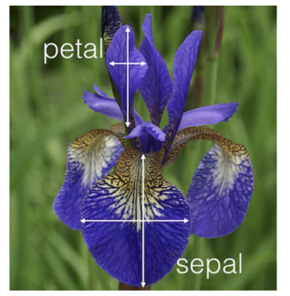
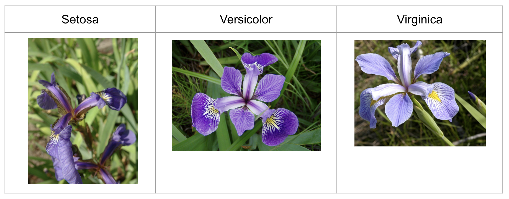

Datasets#

Sklearn In-Built Datasets#
Certain Python libraries/packages offer built-in datasets that can be used for prectices.
Different libraries or packages may return datasets in various formats.
This section will introduce some of the datasets available in Sklearn.
Iris Dataset#
The Iris dataset consists of petal and sepal width-length measurements of 150 iris flowers.
There are 50 samples from each of the following three species (classes):
Setosa
Versicolor
Virginica
It is used for classification tasks in data analysis, as the flower classes are given.

picture sourced from https://www.uvm.edu/~rsingle/stat3880/S24/notes/ch4-5_LDA-IrisData.pdf

picture sourced from https://en.wikipedia.org/wiki/Iris_flower_data_set
load_iris()#
The load_iris function is imported from sklearn.datasets.
load_iris() returns a Bunch object, which is similar to a dictionary.
The keys of a Bunch object can be accessed using dot notation (e.g., load_iris().key_name) as well as square bracket notation (e.g., load_iris[‘key_name’]) like dictionaries.
from sklearn.datasets import load_iris
# load_iris is a function
type(load_iris)
function
# iris is a bunch
iris = load_iris()
type(iris)
sklearn.utils._bunch.Bunch
keys()#
It returns the keys of the Bunch object iris.
iris.keys()
dict_keys(['data', 'target', 'frame', 'target_names', 'DESCR', 'feature_names', 'filename', 'data_module'])
DESCR#
The DESCR attribute provides a detailed description of the dataset as a string.
Use the print() function to render it in a more readable format.
type(iris.DESCR)
str
# not easy to read
iris.DESCR
'.. _iris_dataset:\n\nIris plants dataset\n--------------------\n\n**Data Set Characteristics:**\n\n :Number of Instances: 150 (50 in each of three classes)\n :Number of Attributes: 4 numeric, predictive attributes and the class\n :Attribute Information:\n - sepal length in cm\n - sepal width in cm\n - petal length in cm\n - petal width in cm\n - class:\n - Iris-Setosa\n - Iris-Versicolour\n - Iris-Virginica\n \n :Summary Statistics:\n\n ============== ==== ==== ======= ===== ====================\n Min Max Mean SD Class Correlation\n ============== ==== ==== ======= ===== ====================\n sepal length: 4.3 7.9 5.84 0.83 0.7826\n sepal width: 2.0 4.4 3.05 0.43 -0.4194\n petal length: 1.0 6.9 3.76 1.76 0.9490 (high!)\n petal width: 0.1 2.5 1.20 0.76 0.9565 (high!)\n ============== ==== ==== ======= ===== ====================\n\n :Missing Attribute Values: None\n :Class Distribution: 33.3% for each of 3 classes.\n :Creator: R.A. Fisher\n :Donor: Michael Marshall (MARSHALL%PLU@io.arc.nasa.gov)\n :Date: July, 1988\n\nThe famous Iris database, first used by Sir R.A. Fisher. The dataset is taken\nfrom Fisher\'s paper. Note that it\'s the same as in R, but not as in the UCI\nMachine Learning Repository, which has two wrong data points.\n\nThis is perhaps the best known database to be found in the\npattern recognition literature. Fisher\'s paper is a classic in the field and\nis referenced frequently to this day. (See Duda & Hart, for example.) The\ndata set contains 3 classes of 50 instances each, where each class refers to a\ntype of iris plant. One class is linearly separable from the other 2; the\nlatter are NOT linearly separable from each other.\n\n.. topic:: References\n\n - Fisher, R.A. "The use of multiple measurements in taxonomic problems"\n Annual Eugenics, 7, Part II, 179-188 (1936); also in "Contributions to\n Mathematical Statistics" (John Wiley, NY, 1950).\n - Duda, R.O., & Hart, P.E. (1973) Pattern Classification and Scene Analysis.\n (Q327.D83) John Wiley & Sons. ISBN 0-471-22361-1. See page 218.\n - Dasarathy, B.V. (1980) "Nosing Around the Neighborhood: A New System\n Structure and Classification Rule for Recognition in Partially Exposed\n Environments". IEEE Transactions on Pattern Analysis and Machine\n Intelligence, Vol. PAMI-2, No. 1, 67-71.\n - Gates, G.W. (1972) "The Reduced Nearest Neighbor Rule". IEEE Transactions\n on Information Theory, May 1972, 431-433.\n - See also: 1988 MLC Proceedings, 54-64. Cheeseman et al"s AUTOCLASS II\n conceptual clustering system finds 3 classes in the data.\n - Many, many more ...'
print(iris.DESCR[:])
.. _iris_dataset:
Iris plants dataset
--------------------
**Data Set Characteristics:**
:Number of Instances: 150 (50 in each of three classes)
:Number of Attributes: 4 numeric, predictive attributes and the class
:Attribute Information:
- sepal length in cm
- sepal width in cm
- petal length in cm
- petal width in cm
- class:
- Iris-Setosa
- Iris-Versicolour
- Iris-Virginica
:Summary Statistics:
============== ==== ==== ======= ===== ====================
Min Max Mean SD Class Correlation
============== ==== ==== ======= ===== ====================
sepal length: 4.3 7.9 5.84 0.83 0.7826
sepal width: 2.0 4.4 3.05 0.43 -0.4194
petal length: 1.0 6.9 3.76 1.76 0.9490 (high!)
petal width: 0.1 2.5 1.20 0.76 0.9565 (high!)
============== ==== ==== ======= ===== ====================
:Missing Attribute Values: None
:Class Distribution: 33.3% for each of 3 classes.
:Creator: R.A. Fisher
:Donor: Michael Marshall (MARSHALL%PLU@io.arc.nasa.gov)
:Date: July, 1988
The famous Iris database, first used by Sir R.A. Fisher. The dataset is taken
from Fisher's paper. Note that it's the same as in R, but not as in the UCI
Machine Learning Repository, which has two wrong data points.
This is perhaps the best known database to be found in the
pattern recognition literature. Fisher's paper is a classic in the field and
is referenced frequently to this day. (See Duda & Hart, for example.) The
data set contains 3 classes of 50 instances each, where each class refers to a
type of iris plant. One class is linearly separable from the other 2; the
latter are NOT linearly separable from each other.
.. topic:: References
- Fisher, R.A. "The use of multiple measurements in taxonomic problems"
Annual Eugenics, 7, Part II, 179-188 (1936); also in "Contributions to
Mathematical Statistics" (John Wiley, NY, 1950).
- Duda, R.O., & Hart, P.E. (1973) Pattern Classification and Scene Analysis.
(Q327.D83) John Wiley & Sons. ISBN 0-471-22361-1. See page 218.
- Dasarathy, B.V. (1980) "Nosing Around the Neighborhood: A New System
Structure and Classification Rule for Recognition in Partially Exposed
Environments". IEEE Transactions on Pattern Analysis and Machine
Intelligence, Vol. PAMI-2, No. 1, 67-71.
- Gates, G.W. (1972) "The Reduced Nearest Neighbor Rule". IEEE Transactions
on Information Theory, May 1972, 431-433.
- See also: 1988 MLC Proceedings, 54-64. Cheeseman et al"s AUTOCLASS II
conceptual clustering system finds 3 classes in the data.
- Many, many more ...
data#
The data attribute returns a NumPy array. It serves as the input data for modeling tasks.
It contains four measurements (sepal length, sepal width, petal length, petal width) for each flower.
Its shape is 150 by 4.
150 samples (flowers)
4 features (measurements)
iris.data[:3]
array([[5.1, 3.5, 1.4, 0.2],
[4.9, 3. , 1.4, 0.2],
[4.7, 3.2, 1.3, 0.2]])
iris.data.shape
(150, 4)
target#
The target attribute returns a NumPy array. It serves as the output data for modeling tasks.
It consists of the types/classes/species of each flower.
Its shape is (150,)
150 samples (flowers)
The three classes—Setosa, Versicolor, and Virginica—are represented by the numbers 0, 1, and 2, respectively.
iris.target
array([0, 0, 0, 0, 0, 0, 0, 0, 0, 0, 0, 0, 0, 0, 0, 0, 0, 0, 0, 0, 0, 0,
0, 0, 0, 0, 0, 0, 0, 0, 0, 0, 0, 0, 0, 0, 0, 0, 0, 0, 0, 0, 0, 0,
0, 0, 0, 0, 0, 0, 1, 1, 1, 1, 1, 1, 1, 1, 1, 1, 1, 1, 1, 1, 1, 1,
1, 1, 1, 1, 1, 1, 1, 1, 1, 1, 1, 1, 1, 1, 1, 1, 1, 1, 1, 1, 1, 1,
1, 1, 1, 1, 1, 1, 1, 1, 1, 1, 1, 1, 2, 2, 2, 2, 2, 2, 2, 2, 2, 2,
2, 2, 2, 2, 2, 2, 2, 2, 2, 2, 2, 2, 2, 2, 2, 2, 2, 2, 2, 2, 2, 2,
2, 2, 2, 2, 2, 2, 2, 2, 2, 2, 2, 2, 2, 2, 2, 2, 2, 2])
iris.target.shape
(150,)
target_names#
It returns the names of the three classes that are represented by numbers in the target.
iris.target_names
array(['setosa', 'versicolor', 'virginica'], dtype='<U10')
feature_names#
It returns the names of the four features (measurements).
iris.feature_names
['sepal length (cm)',
'sepal width (cm)',
'petal length (cm)',
'petal width (cm)']
California Housing Dataset#
from sklearn.datasets import fetch_california_housing
fetch_california_housing()#
The fetch_california_housing function is imported from sklearn.datasets.
fetch_california_housing() returns a Bunch object, which is similar to a dictionary.
The keys of a Bunch object can be accessed using dot notation (e.g., fetch_california_housing().key_name) as well as square bracket notation (e.g., lfetch_california_housing[‘key_name’]) like dictionaries.
housing = fetch_california_housing()
keys()#
It returns the keys of the Bunch object housing.
housing.keys()
dict_keys(['data', 'target', 'frame', 'target_names', 'feature_names', 'DESCR'])
DESCR#
The DESCR attribute provides a detailed description of the dataset as a string.
Use the print() function to render it in a more readable format.
housing.DESCR
'.. _california_housing_dataset:\n\nCalifornia Housing dataset\n--------------------------\n\n**Data Set Characteristics:**\n\n :Number of Instances: 20640\n\n :Number of Attributes: 8 numeric, predictive attributes and the target\n\n :Attribute Information:\n - MedInc median income in block group\n - HouseAge median house age in block group\n - AveRooms average number of rooms per household\n - AveBedrms average number of bedrooms per household\n - Population block group population\n - AveOccup average number of household members\n - Latitude block group latitude\n - Longitude block group longitude\n\n :Missing Attribute Values: None\n\nThis dataset was obtained from the StatLib repository.\nhttps://www.dcc.fc.up.pt/~ltorgo/Regression/cal_housing.html\n\nThe target variable is the median house value for California districts,\nexpressed in hundreds of thousands of dollars ($100,000).\n\nThis dataset was derived from the 1990 U.S. census, using one row per census\nblock group. A block group is the smallest geographical unit for which the U.S.\nCensus Bureau publishes sample data (a block group typically has a population\nof 600 to 3,000 people).\n\nA household is a group of people residing within a home. Since the average\nnumber of rooms and bedrooms in this dataset are provided per household, these\ncolumns may take surprisingly large values for block groups with few households\nand many empty houses, such as vacation resorts.\n\nIt can be downloaded/loaded using the\n:func:`sklearn.datasets.fetch_california_housing` function.\n\n.. topic:: References\n\n - Pace, R. Kelley and Ronald Barry, Sparse Spatial Autoregressions,\n Statistics and Probability Letters, 33 (1997) 291-297\n'
print(housing.DESCR)
.. _california_housing_dataset:
California Housing dataset
--------------------------
**Data Set Characteristics:**
:Number of Instances: 20640
:Number of Attributes: 8 numeric, predictive attributes and the target
:Attribute Information:
- MedInc median income in block group
- HouseAge median house age in block group
- AveRooms average number of rooms per household
- AveBedrms average number of bedrooms per household
- Population block group population
- AveOccup average number of household members
- Latitude block group latitude
- Longitude block group longitude
:Missing Attribute Values: None
This dataset was obtained from the StatLib repository.
https://www.dcc.fc.up.pt/~ltorgo/Regression/cal_housing.html
The target variable is the median house value for California districts,
expressed in hundreds of thousands of dollars ($100,000).
This dataset was derived from the 1990 U.S. census, using one row per census
block group. A block group is the smallest geographical unit for which the U.S.
Census Bureau publishes sample data (a block group typically has a population
of 600 to 3,000 people).
A household is a group of people residing within a home. Since the average
number of rooms and bedrooms in this dataset are provided per household, these
columns may take surprisingly large values for block groups with few households
and many empty houses, such as vacation resorts.
It can be downloaded/loaded using the
:func:`sklearn.datasets.fetch_california_housing` function.
.. topic:: References
- Pace, R. Kelley and Ronald Barry, Sparse Spatial Autoregressions,
Statistics and Probability Letters, 33 (1997) 291-297
data#
The data attribute returns a NumPy array. It serves as the input data for modeling tasks.
It contains eight features (MedInc, HouseAge, AveRooms, AveBedrms, Population, AveOccup, Latitude, Longitude) for each block.
Its shape is 20640 by 8.
20640 samples (blocks)
8 features
housing.data[:2]
array([[ 8.32520000e+00, 4.10000000e+01, 6.98412698e+00,
1.02380952e+00, 3.22000000e+02, 2.55555556e+00,
3.78800000e+01, -1.22230000e+02],
[ 8.30140000e+00, 2.10000000e+01, 6.23813708e+00,
9.71880492e-01, 2.40100000e+03, 2.10984183e+00,
3.78600000e+01, -1.22220000e+02]])
housing.data.shape
(20640, 8)
target#
The target attribute returns a NumPy array. It serves as the output data for modeling tasks.
It consists of the median house value of each block.
Its shape is (20640,)
20640 samples (blocks)
housing.target
array([4.526, 3.585, 3.521, ..., 0.923, 0.847, 0.894])
housing.target.shape
(20640,)
target_names#
It returns the names of the outputs that are in the target.
housing.target_names
['MedHouseVal']
feature_names#
It returns the names of the eight features.
housing.feature_names
['MedInc',
'HouseAge',
'AveRooms',
'AveBedrms',
'Population',
'AveOccup',
'Latitude',
'Longitude']
Digits Dataset#
The Digits dataset consists of 8x8 pixel images of 1797 handwritten digits.
It is used for classification tasks in data analysis, as the actual digit classes are given.
load_digits()#
The load_digits function is imported from sklearn.datasets.
load_digits() returns a Bunch object, which is similar to a dictionary.
The keys of a Bunch object can be accessed using dot notation (e.g., load_digits().key_name) as well as square bracket notation (e.g., load_digits[‘key_name’]) like dictionaries.
from sklearn.datasets import load_digits
# load_digits is a function
type(load_digits)
function
# digits is a bunch
digits = load_digits()
type(digits)
sklearn.utils._bunch.Bunch
keys()#
It returns the keys of the Bunch object iris.
digits.keys()
dict_keys(['data', 'target', 'frame', 'feature_names', 'target_names', 'images', 'DESCR'])
DESCR#
The DESCR attribute provides a detailed description of the dataset as a string.
Use the print() function to render it in a more readable format.
type(digits.DESCR)
str
# not easy to read
digits.DESCR
".. _digits_dataset:\n\nOptical recognition of handwritten digits dataset\n--------------------------------------------------\n\n**Data Set Characteristics:**\n\n :Number of Instances: 1797\n :Number of Attributes: 64\n :Attribute Information: 8x8 image of integer pixels in the range 0..16.\n :Missing Attribute Values: None\n :Creator: E. Alpaydin (alpaydin '@' boun.edu.tr)\n :Date: July; 1998\n\nThis is a copy of the test set of the UCI ML hand-written digits datasets\nhttps://archive.ics.uci.edu/ml/datasets/Optical+Recognition+of+Handwritten+Digits\n\nThe data set contains images of hand-written digits: 10 classes where\neach class refers to a digit.\n\nPreprocessing programs made available by NIST were used to extract\nnormalized bitmaps of handwritten digits from a preprinted form. From a\ntotal of 43 people, 30 contributed to the training set and different 13\nto the test set. 32x32 bitmaps are divided into nonoverlapping blocks of\n4x4 and the number of on pixels are counted in each block. This generates\nan input matrix of 8x8 where each element is an integer in the range\n0..16. This reduces dimensionality and gives invariance to small\ndistortions.\n\nFor info on NIST preprocessing routines, see M. D. Garris, J. L. Blue, G.\nT. Candela, D. L. Dimmick, J. Geist, P. J. Grother, S. A. Janet, and C.\nL. Wilson, NIST Form-Based Handprint Recognition System, NISTIR 5469,\n1994.\n\n.. topic:: References\n\n - C. Kaynak (1995) Methods of Combining Multiple Classifiers and Their\n Applications to Handwritten Digit Recognition, MSc Thesis, Institute of\n Graduate Studies in Science and Engineering, Bogazici University.\n - E. Alpaydin, C. Kaynak (1998) Cascading Classifiers, Kybernetika.\n - Ken Tang and Ponnuthurai N. Suganthan and Xi Yao and A. Kai Qin.\n Linear dimensionalityreduction using relevance weighted LDA. School of\n Electrical and Electronic Engineering Nanyang Technological University.\n 2005.\n - Claudio Gentile. A New Approximate Maximal Margin Classification\n Algorithm. NIPS. 2000.\n"
print(digits.DESCR)
.. _digits_dataset:
Optical recognition of handwritten digits dataset
--------------------------------------------------
**Data Set Characteristics:**
:Number of Instances: 1797
:Number of Attributes: 64
:Attribute Information: 8x8 image of integer pixels in the range 0..16.
:Missing Attribute Values: None
:Creator: E. Alpaydin (alpaydin '@' boun.edu.tr)
:Date: July; 1998
This is a copy of the test set of the UCI ML hand-written digits datasets
https://archive.ics.uci.edu/ml/datasets/Optical+Recognition+of+Handwritten+Digits
The data set contains images of hand-written digits: 10 classes where
each class refers to a digit.
Preprocessing programs made available by NIST were used to extract
normalized bitmaps of handwritten digits from a preprinted form. From a
total of 43 people, 30 contributed to the training set and different 13
to the test set. 32x32 bitmaps are divided into nonoverlapping blocks of
4x4 and the number of on pixels are counted in each block. This generates
an input matrix of 8x8 where each element is an integer in the range
0..16. This reduces dimensionality and gives invariance to small
distortions.
For info on NIST preprocessing routines, see M. D. Garris, J. L. Blue, G.
T. Candela, D. L. Dimmick, J. Geist, P. J. Grother, S. A. Janet, and C.
L. Wilson, NIST Form-Based Handprint Recognition System, NISTIR 5469,
1994.
.. topic:: References
- C. Kaynak (1995) Methods of Combining Multiple Classifiers and Their
Applications to Handwritten Digit Recognition, MSc Thesis, Institute of
Graduate Studies in Science and Engineering, Bogazici University.
- E. Alpaydin, C. Kaynak (1998) Cascading Classifiers, Kybernetika.
- Ken Tang and Ponnuthurai N. Suganthan and Xi Yao and A. Kai Qin.
Linear dimensionalityreduction using relevance weighted LDA. School of
Electrical and Electronic Engineering Nanyang Technological University.
2005.
- Claudio Gentile. A New Approximate Maximal Margin Classification
Algorithm. NIPS. 2000.
data#
The data attribute returns a NumPy array. It serves as the input data for modeling tasks.
It contains 64 numbers for each image that represents 8x8 pixels.
Its shape is 1797 by 64.
1797 samples (images)
64 pixels
digits.data[:3]
array([[ 0., 0., 5., 13., 9., 1., 0., 0., 0., 0., 13., 15., 10.,
15., 5., 0., 0., 3., 15., 2., 0., 11., 8., 0., 0., 4.,
12., 0., 0., 8., 8., 0., 0., 5., 8., 0., 0., 9., 8.,
0., 0., 4., 11., 0., 1., 12., 7., 0., 0., 2., 14., 5.,
10., 12., 0., 0., 0., 0., 6., 13., 10., 0., 0., 0.],
[ 0., 0., 0., 12., 13., 5., 0., 0., 0., 0., 0., 11., 16.,
9., 0., 0., 0., 0., 3., 15., 16., 6., 0., 0., 0., 7.,
15., 16., 16., 2., 0., 0., 0., 0., 1., 16., 16., 3., 0.,
0., 0., 0., 1., 16., 16., 6., 0., 0., 0., 0., 1., 16.,
16., 6., 0., 0., 0., 0., 0., 11., 16., 10., 0., 0.],
[ 0., 0., 0., 4., 15., 12., 0., 0., 0., 0., 3., 16., 15.,
14., 0., 0., 0., 0., 8., 13., 8., 16., 0., 0., 0., 0.,
1., 6., 15., 11., 0., 0., 0., 1., 8., 13., 15., 1., 0.,
0., 0., 9., 16., 16., 5., 0., 0., 0., 0., 3., 13., 16.,
16., 11., 5., 0., 0., 0., 0., 3., 11., 16., 9., 0.]])
digits.data.shape
(1797, 64)
image#
It returns each image as an 8x8 array, allowing it to be displayed as follows:
import matplotlib.pyplot as plt
# first image
plt.imshow(digits.images[0], 'gray');
# smaller size and no axis lines
plt.figure(figsize=(2,2))
plt.imshow(digits.images[0], 'gray')
plt.axis('off');
target#
The target attribute returns a NumPy array. It serves as the output data for modeling tasks.
It consists of the actual class of each image.
Its shape is (1797,)
1797 samples (images)
digits.target
array([0, 1, 2, ..., 8, 9, 8])
digits.target.shape
(1797,)
target_names#
It returns the digits: 0,1,2,3,4,5,6,7,8,9
digits.target_names
array([0, 1, 2, 3, 4, 5, 6, 7, 8, 9])
feature_names#
It returns the names of all pixels.
digits.feature_names
['pixel_0_0',
'pixel_0_1',
'pixel_0_2',
'pixel_0_3',
'pixel_0_4',
'pixel_0_5',
'pixel_0_6',
'pixel_0_7',
'pixel_1_0',
'pixel_1_1',
'pixel_1_2',
'pixel_1_3',
'pixel_1_4',
'pixel_1_5',
'pixel_1_6',
'pixel_1_7',
'pixel_2_0',
'pixel_2_1',
'pixel_2_2',
'pixel_2_3',
'pixel_2_4',
'pixel_2_5',
'pixel_2_6',
'pixel_2_7',
'pixel_3_0',
'pixel_3_1',
'pixel_3_2',
'pixel_3_3',
'pixel_3_4',
'pixel_3_5',
'pixel_3_6',
'pixel_3_7',
'pixel_4_0',
'pixel_4_1',
'pixel_4_2',
'pixel_4_3',
'pixel_4_4',
'pixel_4_5',
'pixel_4_6',
'pixel_4_7',
'pixel_5_0',
'pixel_5_1',
'pixel_5_2',
'pixel_5_3',
'pixel_5_4',
'pixel_5_5',
'pixel_5_6',
'pixel_5_7',
'pixel_6_0',
'pixel_6_1',
'pixel_6_2',
'pixel_6_3',
'pixel_6_4',
'pixel_6_5',
'pixel_6_6',
'pixel_6_7',
'pixel_7_0',
'pixel_7_1',
'pixel_7_2',
'pixel_7_3',
'pixel_7_4',
'pixel_7_5',
'pixel_7_6',
'pixel_7_7']